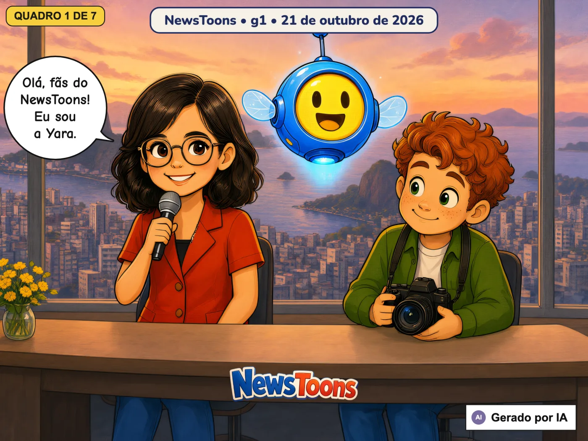
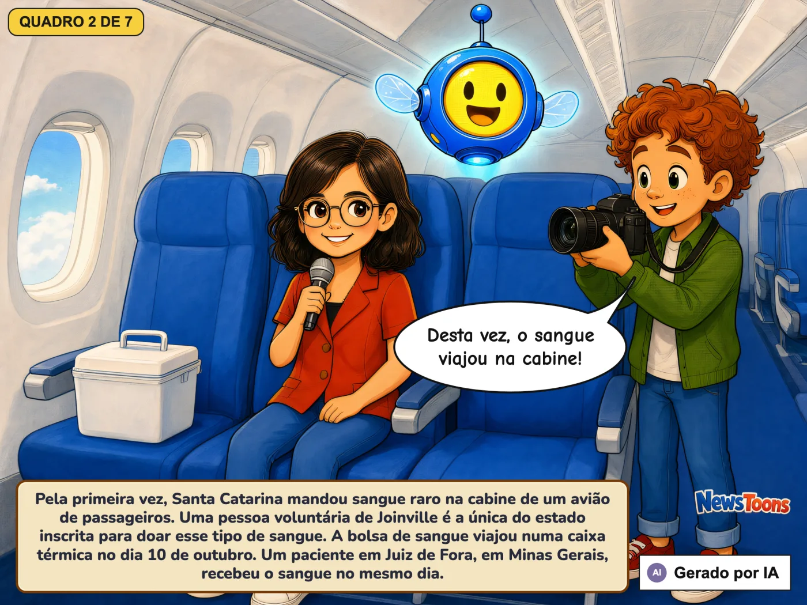
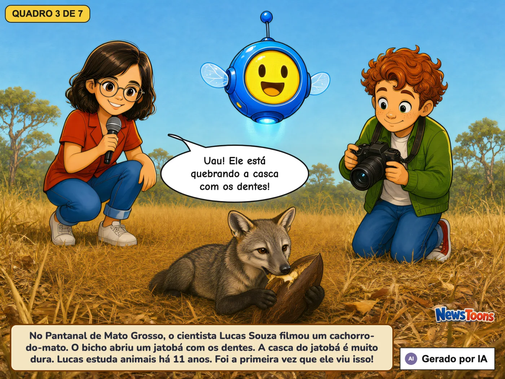
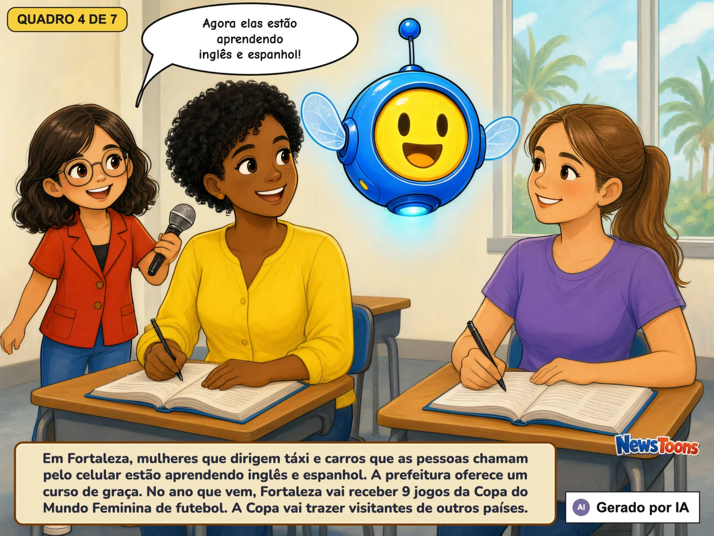
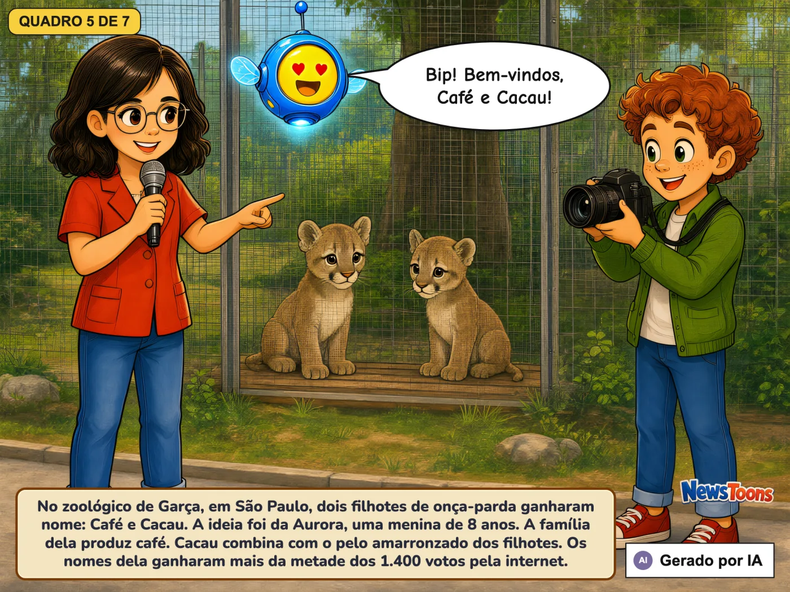
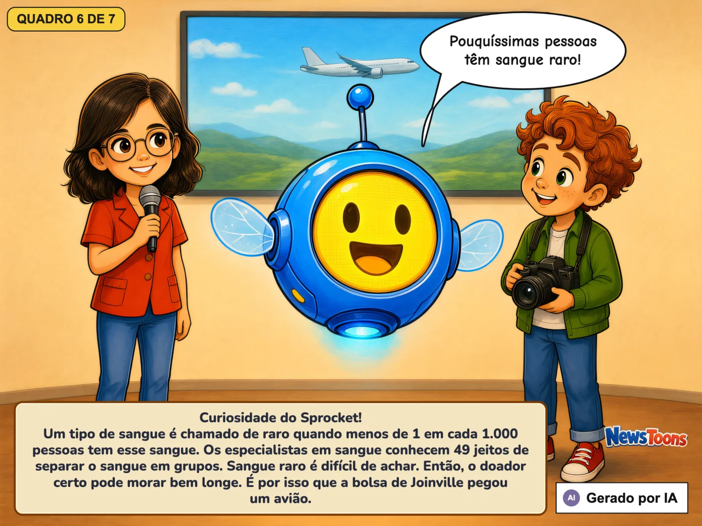
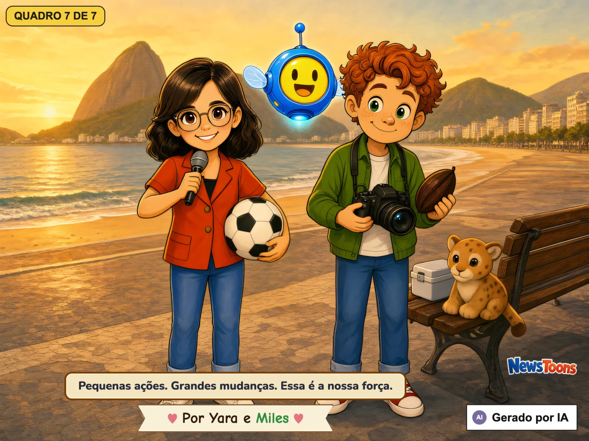

Sangue raro viaja de avião e dois filhotes de onça-parda ganham nome g1 (TV Globo) 2026-10-21 · Por Yara e Miles Sangue raro anda de aviãoUm cachorro-do-mato e um fruto duroMotoristas aprendem palavras novasCafé e CacauCuriosidade do Sprocket 🌐 English · Português 🔊 Ouvir 🔊 Ouvir 🔊 Ouvir 🔊 Ouvir 🔊 Ouvir 🔊 Ouvir 🔊 Ouvir Você gostou desta história? 🙂 😐 🙁 Obrigado! 💛 ⬅️ AnteriorTodas as histórias 🏠Próxima ➡️